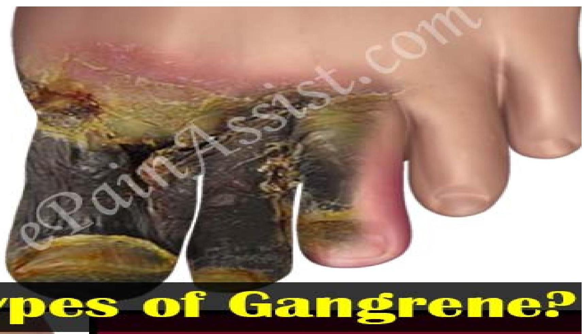

VASCULAR CONDITIONS
ATHEROSCLEROSIS / ARTERIOSCLEROSIS
Atherosclerosis:
Is a disease of the arteries in which fatty plagues develop on their inner walls, eventually obstructing blood flow and interfering with absorption of nutrients.
Atherosclerosis is a slow, progressive disease that may begin as early as childhood, and may start with damage or injury to the inner layer of an artery
Arteriosclerosis:
Is hardening of arteries with loss of elasticity within the middle layer of the small arteries, causing impaired blood supply to the organs and severe elevation of blood pressure.
- It is associated with some degree of atheroma and old age.
- Although the processes of atherosclerosis and arteriosclerosis differ, rarely does one occur without the other
- Atheroma is the buildup of materials that adhere to arteries, which include: fat, cholesterol, calcium etc.
Pathophysiology
Cholesterol and calcium can collect in your arteries and form plaque. The buildup of plaque makes it difficult for blood to flow through your arteries. This buildup may occur in any artery in your body, including your heart, legs, and kidneys.
It can result in a shortage of blood and oxygen in various tissues of your body. Pieces of plaque can also break off, causing a blood clot. If left untreated, atherosclerosis can lead to heart attack, stroke, or heart failure.
Fatty streaks deposited in the intima of the arterial wall. This leads to inflammatory response.
T- lymphocites ingests the lipids and die, this causes the smooth cells to proliferate and form fibrous cap over the dead fatty core. These deposits, called atheromas or plaques protrudes into the lumen, narrowing the vessels and obstructing the blood flow.
The plaque remains stable and resist the pressure from blood flow and the vessel movement. If the cap is thin, the lipid core may rupture, allowing formation of thrombus that can block blood flow leading to sudden death.
Inadequate supply of Oxygen to the myocardium causes death of the muscle - this is called ischemia. Ischemia causes angina pectoris. If itis severe, it leads to Myocardial infarction.
Atherosclerosis ct...
Causes
- High blood pressure
- High cholesterol
- High triglycerides, a type of fat (lipid) in your blood
- Smoking and other sources of tobacco
- Insulin resistance diabetes
- Obesity
- Inflammation from an unknown cause or from diseases such as arthritis, lupus, psoriasis or inflammatory bowel disease
Clinical features:
Symptoms of moderate to severe atherosclerosis depend on which arteries are affected:
- If you have atherosclerosis in your heart arteries, you may have symptoms, such as chest pain or pressure (angina).
- If you have atherosclerosis in the arteries leading to your brain, you may have signs and symptoms such as sudden numbness or weakness in your arms or legs, difficulty speaking or slurred speech, temporary loss of vision in one eye, or drooping muscles in your face. These signal a transient ischemic attack (TIA), which, if left untreated, may progress to a stroke.
Clinical features ct..
- If you have atherosclerosis in the arteries in your arms and legs, you may have signs or symptoms of peripheral artery disease, such as leg pain when walking (claudication) or decreased blood pressure in an affected limb.
- If you have atherosclerosis in the arteries leading to your kidneys, you develop high blood pressure or kidney failure.
Diagnosis:
- Blood tests: Blood sugar and Cholesterol levels
- C-reactive protein (CRP)
- Echocardiogram
- Ankle-brachial index (ABI) - atherosclerosis in the arteries of legs and feet
- Cardiac catheterization and angiogram This test can show if your coronary arteries are narrowed or blocked.
Management:
- Lifestyle changes, such as eating a healthy diet and exercising, are the first treatment for atherosclerosis and may be all that you need to treat your atherosclerosis.
- Give bed rest
- Provide warmth to cold extremities, Elevate the feet
- Moderate regular exercises for the limbs
- Skin care
- Low fat diet
- Stop smoking
Management ct...
But sometimes, medication or surgical procedures may be needed to slow or reverse the effects of atherosclerosis.
Medications:
- Vasodilators- nifedipine
- Nicotinic acid- antilipemic to decrease serum lipids
- Antiplatelet;- aspirin
- Thrombolytic
- Anticoagulant - heparin
Surgery or other procedures: Incase of severe symptoms or a blockage, one of the following surgical procedures may be performed:
- Angioplasty and stent placement: also called percutaneous coronary intervention (PCI) - helps open a clogged or blocked artery by insertion a catheter into the diseased artery.
- Fibrinolytic therapy: If you have an artery that's blocked by a blood clot - use a clot-dissolving drug to break it apart.
- Coronary artery bypass surgery: this type of open-heart surgery, a healthy blood vessel is taken from another part of the body to create a bypass around the blocked artery, redirecting blood flow. Sometimes the bypass is a graft made of synthetic material.
Prevention of Atherosclerosis
- Stop smoking
- Exercise most days of the week
- Maintain a healthy weight
- Manage stress
Aneurysms
An aneurysm is the enlargement of an artery caused by weakness in the arterial wall. It is the weakening of an artery wall that creates a bulge or distention of the artery.
Most aneurysms do not show symptoms and are not dangerous, however, at their most severe stage, some can rupture, leading to life-threatening internal bleeding.
Effects of aneurysm
- Aneurysms affect a variety of arteries. The most significant aneurysms affect the arteries supplying the brain and the heart.
- An aortic aneurysm affects the body's main artery.
- The rupture of an aneurysm causes internal bleeding.
- The risk of an aneurysm developing and rupturing varies between individuals.
- Some types of aneurysm may need surgical treatment to prevent rupture.
Risk factors
- Smoking
- High blood pressure
- Poor diet
- Sedentary life style
- Obesity
Pathophysiology
Usually caused by atherosclerosis (thickening of the arterial walls), aneurysms also may be the result of infection (constant pressure of the circulating blood within the artery, the weakened part of the arterial wall becomes enlarged, leading ultimately to serious and even fatal complications from the compression of surrounding structures or from rupture and hemorrhage.
TYPES:
Aneurysm can take two main shapes:
- Fusiform aneurysms bulge all sides of a blood vessel
- Saccular aneurysms bulge only on one side
Aortic aneurysm
The aorta is the large artery that begins at the left ventricle of the heart and passes through the chest and abdominal cavities.
The normal diameter of the aorta is between 2 and 3 centimeters (cm) but can bulge to beyond 5 cm with an aneurysm.
- The most common aneurysm of the aorta is an abdominal aortic aneurysm (AAA). Without surgery, the annual survival rate for an AAA of over 6 cm is 20 percent.
- AAA can rapidly become fatal, but those that survive the transfer to a hospital have a 50 percent chance of overall survival.
- Less commonly, a thoracic aortic aneurysm (TAA) can affect the part of the aorta running through the chest
Cerebral aneurysm
- Aneurysms of the arteries that supply the brain with blood are known as intracranial aneurysms. Due to their appearance, they are also known as "berry" aneurysms.
- A ruptured aneurysm of the brain can be fatal within 24 hours. Forty percent of brain aneurysms are fatal, and around 66 percent of those who survive will experience a resulting neurological impairment or disability.
- Ruptured cerebral aneurysms are the most common cause of a type of stroke known as subarachnoid hemorrhage (SAH).
Peripheral aneurysm:
An aneurysm can also occur in a peripheral artery. Types of peripheral aneurysm include:
- Popliteal aneurysm: This happens behind the knee. It is the most common peripheral aneurysm.
- Splenic artery aneurysm: This type of aneurysm occurs near the spleen.
- Mesenteric artery aneurysm: This affects the artery that transports blood to the intestines.
- Femoral artery aneurysm: The femoral artery is in the groin.
- Carotid artery aneurysm: This occurs in the neck.
- Visceral aneurysm: This is a bulge of the arteries that supply blood to the bowel or kidneys.
- Peripheral aneurysms are less likely to rupture than aortic aneurysms.
Symptoms
Most aneurysms are clinically silent. Symptoms do not usually occur unless an aneurysm ruptures.
- However, an un-ruptured aneurysm may still obstruct circulation to other tissues. They can also form blood clots that may go on to obstruct smaller blood vessels. i.e thromboembolism. It can lead to ischemic stroke or other serious complications.
- Rapidly growing abdominal aneurysms are sometimes associated with symptoms. Some people with abdominal aneurysms report abdominal pain, lower back pain, or a pulsating sensation in the abdomen.
Symptoms ct...
- Similarly, thoracic aneurysms can affect nearby nerves and other blood vessels, potentially causing swallowing and breathing difficulties and pain in the jaw, chest and upper back.
- Symptoms can also relate to the cause of an aneurysm rather than the aneurysm itself. For example, in the case of an aneurysm caused by vasculitis or blood vessel inflammation, a person may experience fever, malaise or weight loss.
Risk factors for an aneurysm to rupture
Not all aneurysms will rupture. Aneurysm characteristics such as size, location and growth during follow-up evaluation may affect the risk that an aneurysm will rupture. In addition, medical conditions may influence aneurysm rupture. Risk factors include:
- Smoking
- High blood pressure
- Size
- Location
- Growth - Aneurysms that grow, even if they are small, are at increased risk of rupture
- Family history - The greatest risk occurs in individuals with multiple aneurysms who have already suffered a previous rupture
Diagnosis
- Computed tomography (CT scan)
- Magnetic resonance imaging (MRI)
- Angiography
Management of Aortic Aneurysm
Medications and preventive measures may form part of conservative management, or they may accompany active surgical treatment.
A ruptured aneurysm needs emergency surgery. Without immediate repair, patients have a low chance of survival. The decision to operate on an un-ruptured aneurysm in the aorta depends on:
- The age, general health, coexisting conditions and personal choice of the patient
- The size of the aneurysm relative to its location in the thorax or abdomen, and the aneurysm's rate of growth
- The presence of chronic abdominal pain or risk of thromboembolism, as these may also necessitate surgery
Complications
The first signs of a previously undetected aneurysm could be complications upon rupture. Symptoms tend to result from a rupture rather than the aneurysm alone
Most people living with an aneurysm do not experience any complications. However, in addition to thromboembolism and rupture of the aorta, complications can include:
- Severe chest or back pain: Severe chest or back pain may arise following the rupture of an aortic aneurysm in the chest.
- Angina: Certain types of aneurysm can lead to angina, another type of chest pain. Angina can lead to myocardial ischemia and heart attack.
- A sudden extreme headache: in brain aneurysm
Complications of raptured aneurysm in brain:
- Rebleeding - Once it has ruptured, an aneurysm may rupture again before it is treated, leading to further bleeding into the brain, and causing more damage or death.
- Change in sodium level - Bleeding in the brain can disrupt the balance of sodium in the blood supply and cause swelling in brain cells. This can result in permanent brain damage.
- Hydrocephalus - Subarachnoid hemorrhage can cause hydrocephalus. Hydrocephalus is a buildup of too much cerebrospinal fluid in the brain, which causes pressure that can lead to permanent brain damage or death. Hydrocephalus occurs frequently after subarachnoid hemorrhage because the blood blocks the normal flow of cerebrospinal fluid. If left untreated, increased pressure inside the head can cause coma or death.
- Vasospasm - This occurs frequently after subarachnoid hemorrhage when the bleeding causes the arteries in the brain to contract and limit blood flow to vital areas of the brain. This can cause strokes from lack of adequate blood flow to parts of the brain.
- Seizures - Aneurysm bleeding can cause seizures (convulsions), either at the time of bleed or in the immediate aftermath. While most seizures are evident, on occasion they may only be seen by sophisticated brain testing. Untreated seizures or those that do not respond to treatment can cause brain damage.
GANGRENE
A type of tissue death caused by a lack of blood supply or by a serious bacterial infection.
- Gangrene commonly affects the arms and legs, including the toes and fingers, but it can also occur in the muscles and in organs inside the body, such as the gallbladder.
- NB: GANGRENE IS ONE OF COMPLICATION OF PERIPHERAL ARTERY DISEASE
Types Of Gangrene
- Dry gangrene is a form of coagulative necrosis that develops in ischemic tissue, where the blood supply is inadequate to keep tissue viable. It is not a disease itself but a symptom of other diseases.
- Dry gangrene is often due to peripheral artery disease but can be due to acute limb ischemia. Dry gangrene is the end result of chronic ischemia without infection.
- ISCHEMIA: inadequate blood supply to an area or tissue
- INFARCTION: death of tissues due to reduced blood supply e.g extended ischemia leads to myocardial infarction
- Occurs gradually (slowly) and progresses slowly
- Dry gangrene is the end result of chronic ischemia without infection - once gangrene has developed, the affected tissues are not salvageable.
- Over time, dry gangrene may develop into wet gangrene if an infection develops in the dead tissues.
Risk Factors:
- Diabetes - High blood sugar hardens the walls of the arteries leading to narrowing and obstructed blood supply.
- Arteriosclerosis - occurs when arteries grow thick and stiff and restrict blood flow to organs and tissues in the body.
- Tobacco addiction - Nicotine causes your blood vessels to constrict or narrow, which limits the amount of blood that flows to your organs. Over time, the constant constriction results in blood vessels that are stiff and less elastic. Constricted blood vessels decrease the amount of oxygen and nutrients your cells receive.
- Blood vessel disease - Hardened and narrowed arteries (atherosclerosis) and blood clots also can block blood flow to an area of your body.
- Severe injury or surgery - Any process that causes trauma to the skin and underlying tissue, including an injury or frostbite, increases the risk of developing gangrene, especially if there is an underlying condition that affects blood flow to the injured area.
Sign And Symptoms Of Dry Gangrene
- The tissues becomes cold and black
- Then the tissues begins to dry off and finally fall off
- Then it develops brown discoularation, then becomes black
Dry Gangrene
Wet Gangrene:
- Wet gangrene results from an untreated (or inadequately treated) infection in the body where the local blood supply has been reduced or stopped by tissue swelling, gas production in tissue, bacterial toxins, or all of these factors in combination.
- Wet or moist gangrene develops as a complication of an untreated infected wound. Swelling resulting from the bacterial infection causes a sudden stoppage of blood flow. Cessation of blood flow facilitates invasion of the muscles by the bacteria and multiplication of the bacteria because disease-fighting cells (white blood cells) cannot reach the affected part.
- Gangrene is referred to as wet if there's a bacterial infection in the affected tissue. Swelling, blistering and a wet appearance are common features of wet gangrene. It mainly affects bowels
Causes of Wet Gangrene
A combination of an injury and bacterial infection e.g. in Burns, diabetic wound etc.
Sign and Symptoms of Wet Gangrene:
- Swelling and pain
- Fever and feeling unwell
- Red, brown, purple, blue, greenish-black or black skin
- Blisters or sores with a bad-smelling discharge (pus)
- A crackling noise when you press on the affected area
- Thin, shiny or hairless skin
- A line between healthy and damaged skin
Symptoms of wet gangrene include:
- Swelling and pain
- Fever and feeling unwell
- Red, brown, purple, blue, greenish-black, or black skin
- Blisters or sores with a bad-smelling discharge (pus)
- A crackling noise when you press on the affected area
- Thin, shiny, or hairless skin
- A line between healthy and damaged skin
Wet Gangrene
Wet gangrene Intestine
Gas Gangrene
- Gas gangrene is a type of wet gangrene caused by the bacteria known as Clostridia (Anaerobic bacteria), mainly Clostridium perfringens and several other species of clostridia
- Gas gangrene is a life-threatening infection of muscle tissue that can
- Gas gangrene can develop after certain types of surgery or injuries
- Bacteria gather in an injury or surgical wound that has no blood supply. The bacteria infection causes toxins to form in the tissues, cells, and blood vessels of the body. These toxins then releases gas and causes tissue death.
- Gas gangrene typically affects deep muscle tissue.
- Infection develops deep inside the body and the bacteria responsible begin releasing gas
NB: Clostridium perfringens is a Gram-positive, rod-shaped, anaerabic, spore-forming pathogenic bacterium
- The history in patients with gas gangrene depends on the precipitating factors of the infection.
- Most patients with post-traumatic gas gangrene have sustained serious injury to the skin or soft tissues or have experienced open fractures.
- Patients with postoperative gas gangrenehave frequently undergone recent surgery of the GI or biliary tract.
- In contrast, the history is usually unremarkable in patients with occult malignancy-associated spontaneous gas gangrene. It is associated with poorly cleansed wounds. It sometimes results from surgery in which the blood supply has become damaged.
Certain injuries have a higher risk of causing gas gangrene, including:
- Muscle injuries
- Severely damaged tissues
- Wounds that are very deep
- Wounds that are contaminated with stool or dirt, especially those that might occur on a farm
Clinical Manifestation of Gas Gangrene:
- Wound is infected and bloody discharge may ooze from the affected tissue, Frothy fluid with foul smell may escape from the wound, Vesicles filled with red watery fluid appear and crepitus (crackling) produced by the gas in the tissue may be felt
- Tender wound, severe pain, fever not exceeding $38.3^{\wedge} \mathrm{C}$ and the skin will crackle like bubble wrap when pressed. Surrounding skin initially appears normal or white and tense but later become brown or black in color
- Rapid pulse and respiration, Anorexia, diarrhea and vascular collapse may occur. Death from TOXEMIA is frequent
| Feature | Dry Gangrene | Wet Gangrene |
|---|---|---|
| Site | Commonly limbs | More common in bowel |
| Mechanisms | Arterial occlusion | More commonly venous obstruction, less often arterial occlusion |
| Macroscopy | Organ dry, shrunken and black | Part moist, soft, swollen, rotten and dark |
| Putrefaction | Limited due to very little blood supply | Marked due to stuffing of organ with blood |
| Line of demarcation | Present at the junction between healthy and gangrenous part | No clear line of demarcation |
| Bacteria | Bacteria fail to survive | Numerous present |
| Proanosis | Generally better due to little septicaemia | Generally poor due to profound toxaemia |
Diagnosis:
- History - injury, chronic diseases (such as diabetes), surgery, cigarette smoking, and exposure to extreme cold.
- Physical examination - of the affected area is performed to look for signs of gangrene.
- Blood test - WBC, Culture and
- X-ray, CT scan and/or MRI
- Arteriogram angiogram
Management Of Gangrene:
Treatment for all cases of gangrene usually involves:
- Medical treatment
- Surgery
- Supportive care
- Rehabilitation (occasionally)
Admit the patient
Dry gangrene treatment:
- Surgery that removes the dead tissue(s), such as a toe
- Antibiotics to prevent infection of remaining viable tissue.
- The patient may also receive anticoagulants to reduce blood clotting
- Supportive care can consist of surgical wound care and rehabilitation for reuse of the digits or limb.
Wet Gangrene is a medical emergency and needs immediate treatment.
- SURGICAL DEBRIDEMENT (surgical removal of the dead and dying tissue). In some patients, debridement will not be adequate therapy and amputation of a limb may be needed.
- Intravenous antibiotics need to be administered (usually a combination of two or more broad-spectrum antibiotics, one of which is effective in killing anaerobic bacteria like Clostridium perfringens and another antibiotic effective against methicillin-resistant Staphylococcus aureus (MRSA).
- Rehabilitation therapy for patients with amputation
- Hyperbaric oxygen therapy (oxygen therapy given under pressure with the patient inside a chamber) - improves tissue oxygen supply and can inhibit or kill anaerobic bacteria.
GAS GANGRENE:
- Antibiotics
- Surgery to remove all dead and infected tissue If gas gangrene is suspected, treatment must begin immediately. High doses of antibiotics, typically penicillin and clindamycin, are given, and all dead and infected tissue is removed surgically. About one of five people with gas gangrene in a limb requires amputation.
Treatment in a high-pressure oxygen (hyperbaric oxygen) chamber may also be helpful, but such chambers are not always readily available.
Preventive measures:
- Manage your health conditions. If you have diabetes, keep your blood sugar levels under control. Check your hands, feet, and legs regularly for signs of injury, slow wound healing, or other skin problems. Follow your doctor's advice on living with other conditions that affect your blood flow like peripheral artery disease or Raynaud's phenomenon.
- Watch your wounds - get medical care immediately if you see signs of infection.
- Don't smoke - Tobacco can damage your blood vessels.
- Keep a healthy weight - Extra pounds can put pressure on your arteries, blocking blood flow.